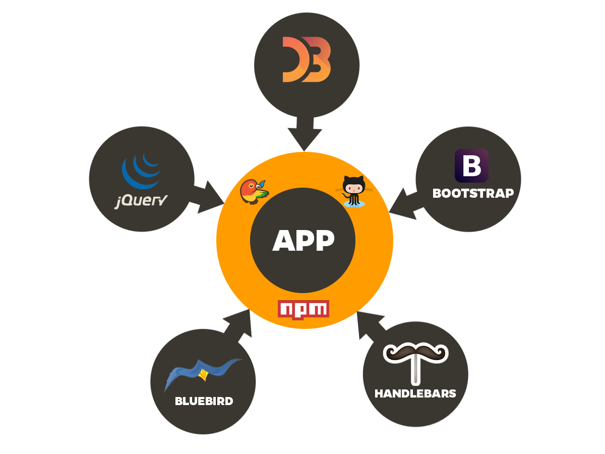
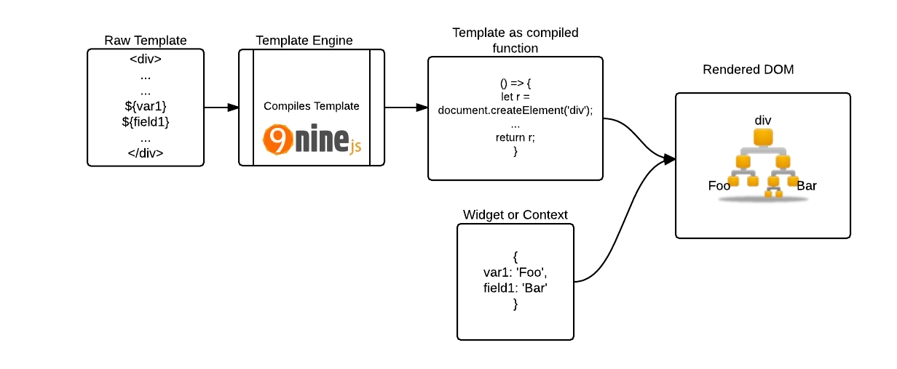
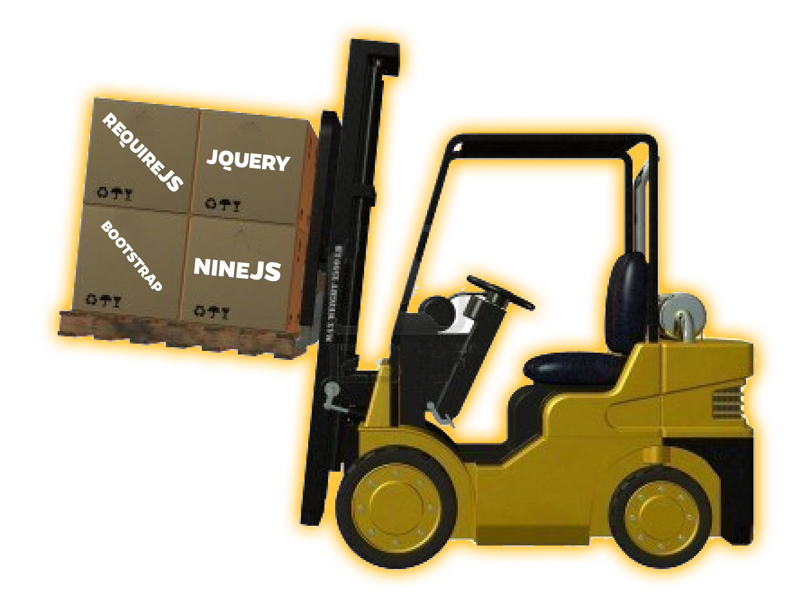
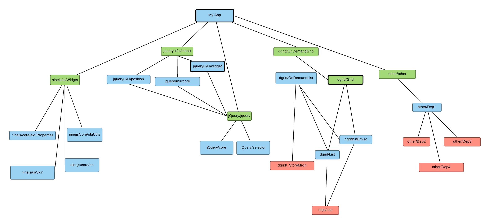
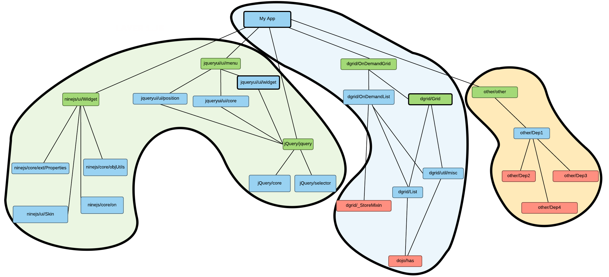
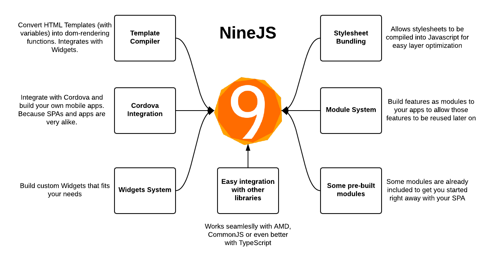
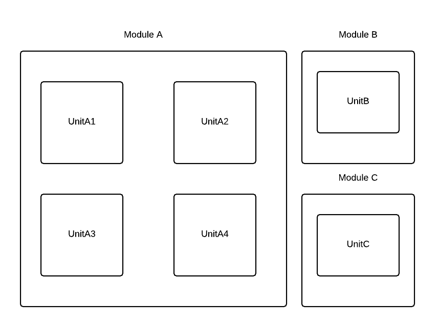
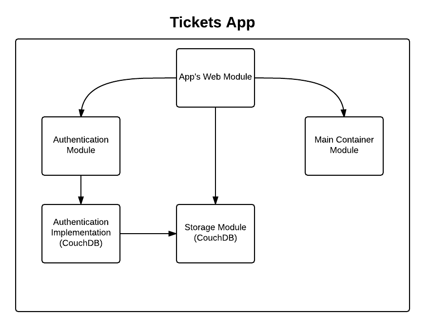

File -> New -> Project
Una aplicación desde cero con NineJS y TypeScript
Por Eduardo Burgos
Quien soy?
Eduardo Burgos
eburgos@gmail.com

Que veremos?
- Que hacer para iniciar un proyecto nuevo?
- NineJS: Algunos conceptos de modulos y dependencias
- Algunos conceptos client-side
- Vista rápida de una aplicación de ejemplo
Cosas que asumo para esta presentación:
- Todos saben que es Node.js y para que se utiliza
- Todos saben que es Git y para que se utiliza

- Todos tienen al menos una idea de qué es TypeScript

Que hacer para iniciar un proyecto nuevo?

Estructura inicial
Para un proyecto nuevo con TypeScript en ambos lugares (Node.js y Browser)
-
Package.json
$ npm init
//enter enter enter enter... -
Gruntfile
$ npm install grunt --save-dev
$ touch Gruntfile.js
// etc etc -
Instalar TypeScript
$ npm install Microsoft/TypeScript --save-dev
Dependencias externas
Dependencias server side
$ npm install <project> --save
Client side
+
grunt.initConfig({
scm: {
dstore: {
type: 'git',
url: 'git://github.com/sitepen/dstore.git',
target: __dirname + '/9js/modules/tickets/lib/dstore',
branch: 'origin/1.x'
},
bootstrap: {
type: 'git',
url: 'git://github.com/twbs/bootstrap.git',
target: __dirname + '/9js/modules/tickets/lib/bootstrap',
branch: 'd533bf0cbc1f0c8c554a0023f2ae6086e3e93a42'
}
}
});Preprocesador de estilos
Alternativas:
Templating engines

 Nineplate
Nineplate
Alternativas: Handlebars, Mustache, etc
Module loaders
 RequireJS
RequireJS
Alternativas: Dojo toolkit, CommonJS (Browserify), etc
Optimizador de recursos y Javascript

dojo/util
Alternativas: r.js
Diagrama de ejemplo de dependencias JS
Dependencias por capas
NineJS
ninejs/ninejs Conceptos de módulos y dependencias
Módulos
Dependencias
Los módulos dependen de units, no de módulos
El propósito de un módulo es agrupar units
'use strict';
import { define } from 'ninejs/modules/moduleDefine'
import Module from 'ninejs/modules/Module'
import { default as WebServer } from 'ninejs/modules/webserver/WebServer'
import { NineJs } from 'ninejs/modules/ninejs-server'
import Tickets from './Tickets'
import Auth from 'ninejs-auth-module'
import CouchDB from 'ninejs-store/CouchDB'
export default define(['ninejs', 'webserver', 'ninejs/auth', 'ninejs/store/couchdb'], (provide) => {
provide('tickets/web', (config: any, ninejs: NineJs, webserver: WebServer, auth: Auth, couchdb: CouchDB) => {
return new Tickets(config, ninejs, webserver, auth, couchdb);
});
}); Algunos conceptos client-side
- Widgets
- Router
Widgets
Router
Aplicación de ejemplo con NineJS y TypeScript
Aplicación de tickets
Conclusión
Preguntas
Contacto
 eburgos@gmail.com
eburgos@gmail.com- eburgos@novosit.com
- eburgos
- ninejs